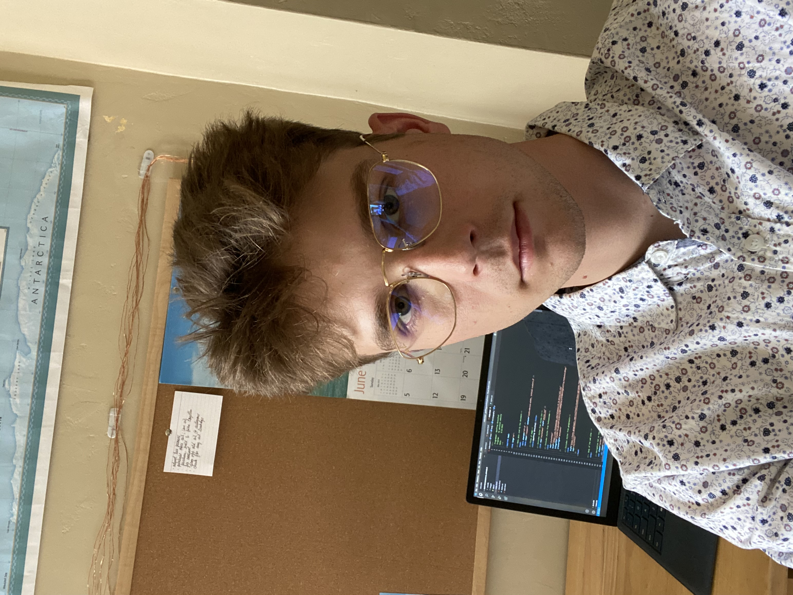

Geoffrey Grossthal
Software Egineer Intern
Computer Science student at Arizona State Univeristy. Passionate about software egineering, data analysis, and machina learning.
Email: ggrossthalcareer@gmail.com

Computer Science student at Arizona State Univeristy. Passionate about software egineering, data analysis, and machina learning.
Email: ggrossthalcareer@gmail.com

My technology interest began at a young age. I was fascinated with how the internet
and computers worked. Entering college I started studying Computer Science and
was captivated to learn how small micro chips, binary numbers and logic gates
would enable humans to develope the technology we have today. I am currently a
a student at Arizona State University learning everything possible about artificial
intelligence, programming, and web development. I am grateful to study this
amazing field and will continue this journey as I leave Arizona State University.